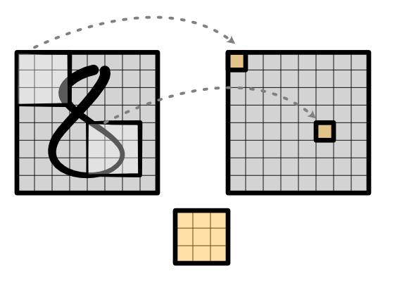
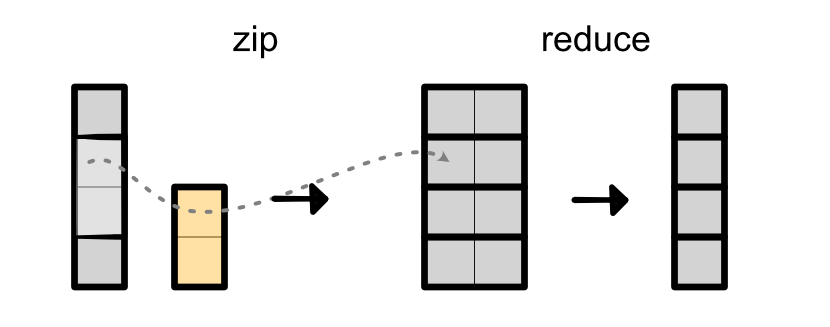
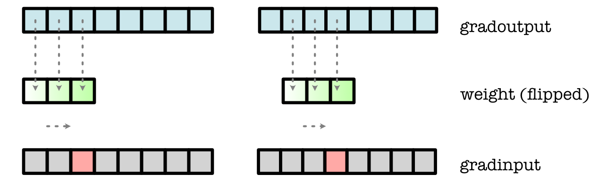
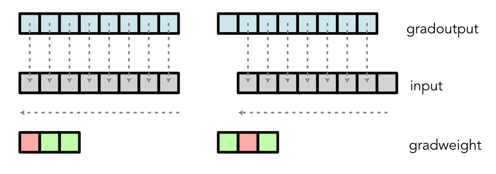
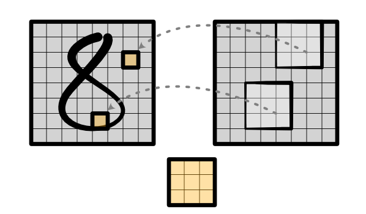

Convolution¶
Note
Convolutions are extensively covered by many excellent tutorials. In addition to this Guide, we recommend you to check other tutorials on convolution for more details.
So far, our main approach to classification problems is to first feed the input to a Linear layer which applies many different linear seperators to the input, and then apply the ReLU function in order to transform it into a new hidden representation.
One major problem with the above approach is that it is based on the absolute position of the original input features, which prevents us from using the same learned parameters on different parts of the input. Instead, we could have a sliding window (i.e. convolution) that uses the same set of learned parameters on different local regions of the input, as shown below:
Instead of directly transforming the entire input image, the same convolution is applied at each part of the image to produce a new representation. It is sliding in the sense that, concenptually, the window over what region to process slides across the entire image to produce the output.
We will primarily use the convolution on images to understand how to learn these locally applied parameters, but to get an intuitivie sense of how convolution works, we will begin with input sequences in 1D.
1D Convolution¶
Our simple 1D convolution takes an input vector of length T and a weight (or kernel) vector of length K to produce an output vector of length T. It computes the output by sliding the weight along the input, zipping the weight with part of the input, reducing the zipped result to one value, and then saving this value in the output:

If the sliding window goes over the edge of the input, to make things simpler, we just assume the out-of-edge input values are 0.
An alternative way to think about a convolution is unrolling the input. Now imagine we have a function named unroll which could take an input tensor and produce a new output tensor:
input = minitorch.tensor([1, 2, 3, 4, 5, 6])
K = 3
input = unroll(input, K)
print(input)
[[1, 2, 3],
[2, 3, 4],
[3, 4, 5],
[4, 5, 6],
[5, 6, 0],
[6, 0, 0]]
We then apply matrix multiplication to take the dot-product:
weight = minitorch.tensor([5, 2, 3])
output = (input @ weight.view(K, 1)).view(T)
print(output)
[18, ..., 30]
We can treat convolution as a fusion of the following two separate operations (note that we do not implement it this way in practice!):
Given an input and weight, it efficiently unrolls the input and takes matrix multiplication with weight. This technique is very useful because it allows you to hover over a local segment of the input sentence. You can think of the weight as capturing a pattern (or many different patterns) in the original input.
Same as every other operation in the model, we need to be able to compute the backward operation of this 1D convolution. Note that we can reason through the flow of each cell with matrix multiplication. Going back to the previous example, the third cell in the original input (i.e. input[2]) is only utilized to compute three different cells in the ouput: output[0], output[1] and output[2]
output[0] = weight[0] * input[0] + \
weight[1] * input[1] + weight[2] * input[2]
output[1] = weight[0] * input[1] + \
weight[1] * input[2] + weight[2] * input[3]
output[2] = weight[0] * input[2] + \
weight[1] * input[3] + weight[2] * input[4]
Therefore, the gradient calculation is
grad_input[2] = weight[0] * grad_output[2] + weight[1] * grad_output[1] + weight[2] * grad_output[0]
Visually, it implies that the backward of convolution is a convolution anchored in the opposite side with the reversed weights:
Similar gradient calculation can be derived for the weight:
The above implies that, same as matrix multiplication, implementing a fast convolution can be used for both forward and backward.
Finally, the above approach can be scaled up to handle multiple input features and multiple weights simultaneously through channels. Analogously to matrix multiplication, we take an (in_channels, T) input and an (out_channels, in_channels, K) weight to produce an (out_channels, T). Below is an example with in_channels = 2, out_channels = 3, K = 3 and T = 8.

Codewise (might be a bit harder to read so we recommend just sticking with the above diagram):
input = minitorch.rand(in_channels, T)
input = unroll(input, K).permute(0, 2, 1) # Shape: in_channels x K x T
weight = minitorch.rand(out_channels, in_channels, K)
output = weight.view(out_channels, in_channels * K) @ input.view(in_channels * K, T)
1D convolution has all sorts of neat applications: it can be applied in NLP as a way of applying a model to multiple neighboring words; it can be used in speech recognition as a way of recognizing important sounds; it can be used in anomoly detection to find patterns that trigger an alertl; anywhere you can imagine that a mini-neural network applying to subset of a sequence can be useful.
2D Convolution¶
While 1D convolutions detect patterns along a sequence, 2D convolutions detect patterns within a grid. The underlying math for the simple 2D is very similar to the 1D case. Our simple 2D convolution takes in an (H, W) input (i.e. height and width) and a (KH, KW) weight to produce an (H, W) output. The operation is nearly identical: we walk through each possible unrolled rectangle in the input matrix, and multiply with the weight. Assuming we had an analogous unroll function for matrices, this would be equivalent to computing:
output = (unrolled_input.view(H, W, KH * KW) @ weight.view(KH * KW, 1)).view(H, W)
Another way to think about it is just applying weight as a Linear layer to each one of the rectangles in the input image.
Critically, just as the 1D convolution is anchored at the left, the 2D convolution is anchored at the top left. To compute its backward, we compute a bottom-right reverse convolution:
Finally, we can again complicate things by applying many weights to many input features simultaneously, which gives us the standard 2D convolution used in Torch. We take an (in_channels, H, W) input, and an (out_channels, in_channels, KW, KH) weight matrix to produce an (out_channels, H, W) output:

Very roughly, the output takes this form:
output = unrolled_input.view(H, W, in_channels * KH * KW) \
@ weight.view(in_channels * KH * KW, out_channels)
2D convolution is the main operator for image recognition systems. It allows us to process images into local feature representations. It is also the key step in the convolutional neural network pipeline. It transforms the input image into hidden features which get propagated through each stage of the network: